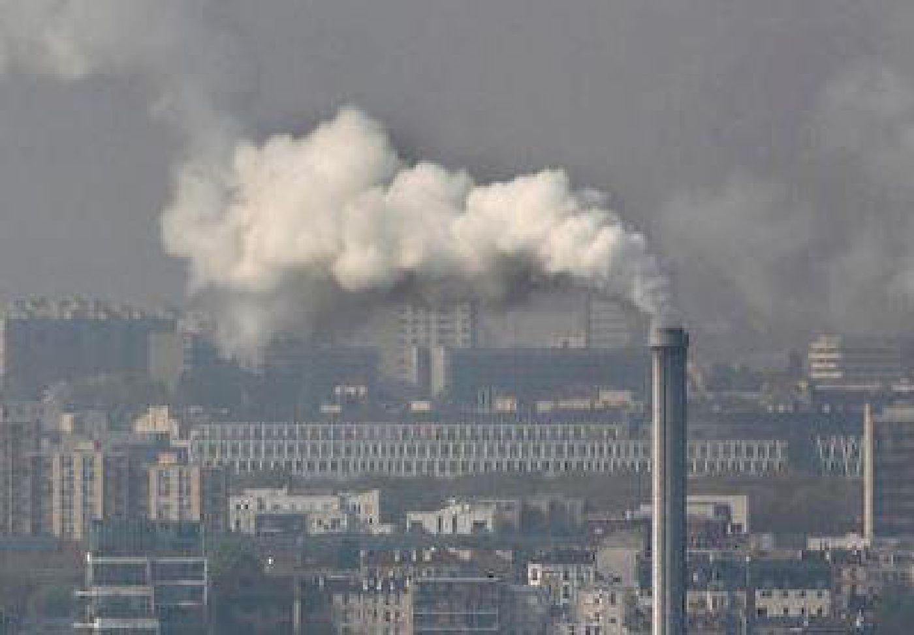
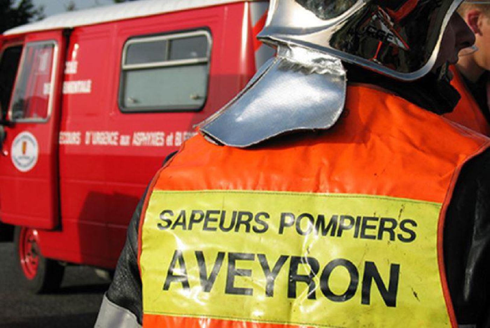
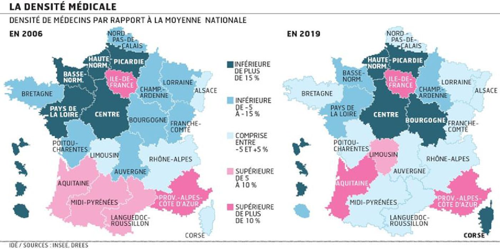
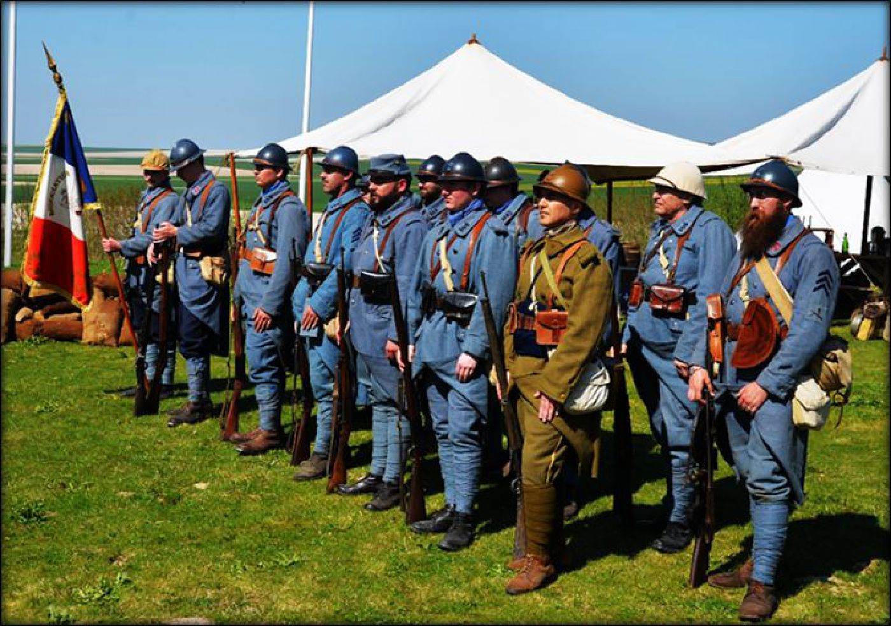
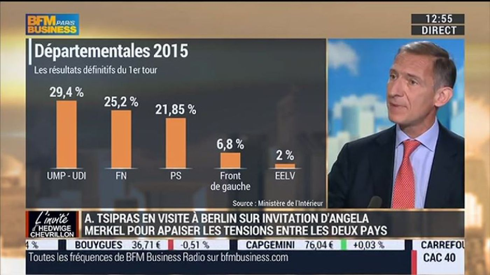
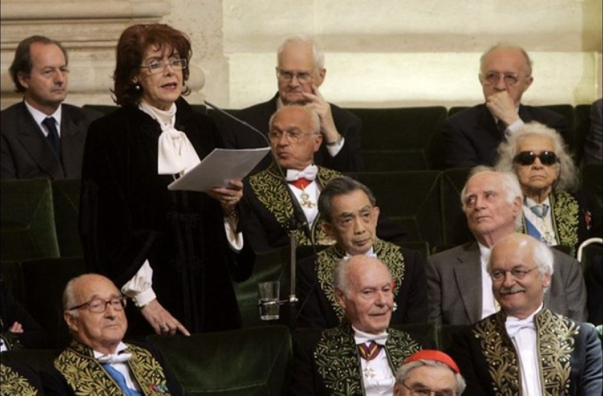
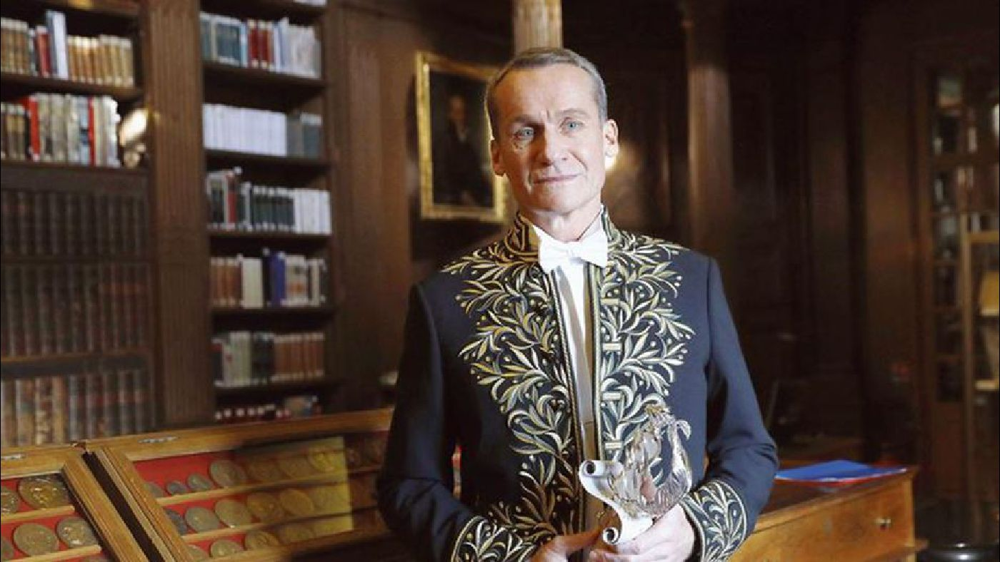
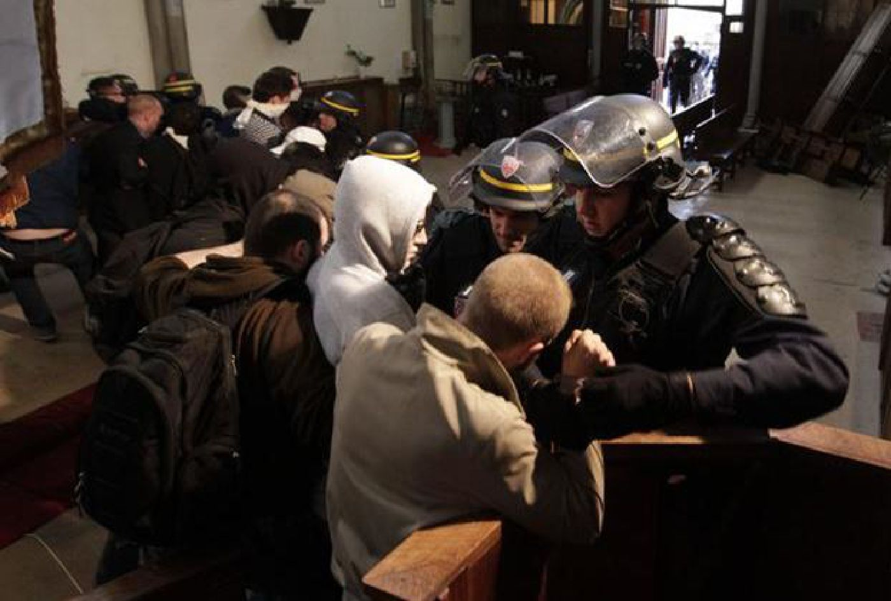
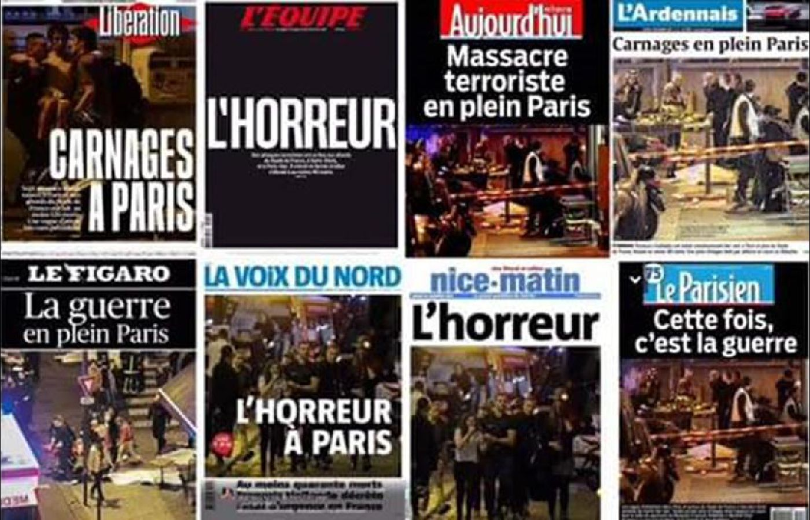
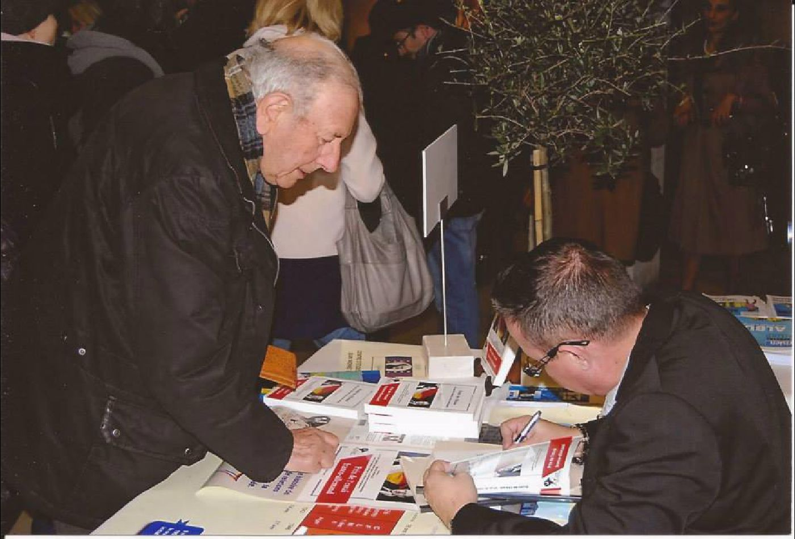

REVUE MÉTHODE
http://revuemethode.org
Merci pour votre message !
Il y avait comme un « un écho lointain et assourdi de la mort du général de Gaulle », dira Jean-Louis Bourlanges. Ce 11 janvier 2010, un cercueil recouvert du drapeau tricolore entre dans la cour d’honneur des Invalides, au son de la Marche funèbre. Malgré le froid polaire, les plus hauts dignitaires de l’État ont fait le déplacement...
La principale menace qui pèse sur la République et sur la Nation, ces deux réalités inséparables, est le communautarisme...
Ce que l’on appelle désormais l’affaire Benalla se révèle à chaque jour plus complexe. Commencée comme une simple affaire de violences sur manifestants, assortie d’usurpation de fonction, elle devient aujourd’hui, au fil des révélations des uns et des autres, une affaire impliquant les sommets de l’État...
Le comment, tout le monde le connaît. Tout a commencé par une vidéo d'un conseiller de Macron, Benalla, un civil et un privé responsable de sa sécurité, dont la carrière soulève beaucoup de questions, se retrouvant selon l'Élysée comme « observateur » le 1er mai dans une manifestation et tabassant des passants en arborant un casque des forces de l'ordre et un brassard de police, sans en avoir le droit. Il a fallu attendre le retour de Macron de la finale de foot à Moscou, pour que le scandale explose...
La Cinquième République a connu en 60 ans une évolution inverse de celle du Second Empire, évolution encore accélérée depuis 18 ans par l’adoption du quinquennat et ses conséquences (j'étais absolument contre)...
Cette histoire commence comme un conte de fées. Dans notre merveilleuse démocratie, tout allait pour le mieux. La presse était libre, le citoyen informé et le pouvoir impartial...
Depuis plusieurs semaines, nous voyons avec effarement une dégradation systématique des écoles de France. Elles sont soit brûlées, soit détruites par des délinquants des banlieues ou des soi-disant étudiants en colère. Le point commun de toutes ces destructions, c’est justement l’idée de détruire...
L’IA ou l’Intelligence Artificielle devrait être dotée d’un investissement de 1,5 milliards d’euros d’ici la fin du quinquennat Macron.
Oui, Emmanuel Macron réfléchit…à l’intelligence artificielle française.
La mathématique devrait tout résoudre selon Cédric Villani, député LREM et mathématicien connu pour être une intelligence au service du Président Macron et qui n’avait pas prévu son accident de vélo par la loi de probabilité...
Le 23 mars dernier, dans un supermarché des faubourgs de Carcassonne, deux conceptions du sacrifice se sont confrontées. Et l’une a égorgé l’autre. Mais laquelle a vaincu...
Dans une conversation avec le regretté Pierre Clostermann, passionné, entre autres, par la pêche aux gros poissons, celui-ci m’avait expliqué comment le pêcheur sportif s’y prenait pour arriver à mettre à bord du bateau des poissons de plusieurs centaines de kilos. Il ne disposait que de sa canne à pêche et d’un fil de nylon dont la résistance à rupture ne dépassait pas une petite fraction du poids de l’animal...
Nous avons pu assister à l’occupation de la Basilique Saint Denis par des clandestins, tous sûrement musulmans, accompagnés par des insoumis et soutenu par le député Coquerel...
Brutalement, la France et son oligarchie se trouvent confrontées à un acte véritablement héroïque, le sacrifice, le don de soi. Il s’agit là d’un événement dont on ne saurait minimiser la portée...

La sanction pourrait atteindre plusieurs milliards d’euros...
Les Français ont pu entendre la traduction du discours de « leur » Président à Davos. Soyons honnêtes, c’était moitié-moitié, comme le sentiment qui se dégage de ce nouvel épisode de la mise en scène présidentielle. Narcisse était manifestement très content de sa prestation et de son numéro de « globish »...
Depuis que le président de la République s’est rendu à Versailles, le 29 mai pour recevoir Vladimir Poutine puis le 3 juillet pour la réunion du Congrès, on discute dans les médias de l’incarnation du pouvoir, de la monarchie et même des trop fameux « deux corps du roi »...

Tandis que nos médias nous abreuvent de bêtisiers pour faire rire le français lambda, bêtisiers tous plus ou moins débiles les uns que les autres, ils font silence sur des saloperies qui ont des conséquences autrement plus importantes...
Les élections de 2017 ont plus que déçu, c’est un euphémisme, l’électorat de droite, qu’il ait été filloniste ou mariniste...

Le désert médical c’est quoi ? C’est une multitude d’endroits dans les campagnes où un malade ne trouve aucun médecin pour le soigner sauf à attendre plusieurs jours un rendez-vous...
Jean-Luc Mélenchon est comme l’enfant qui détruit son château de cartes parce qu’il a voulu trop en rajouter pour épater la galerie...
Il est probable que le parti réputé « d’extrême-droite » autrichien, le FPÖ revienne au gouvernement de Vienne. Cela fera grincer quelques dents en Europe, braire les bien-pensants à sens unique de notre microcosme qu’on n’ose plus appeler national...
Je me croyais en vacances… et voilà qu’à peine ma dernière copie de bac corrigée, je suis rattrapé par le boulot. C’est qu’un ami vient de porter à ma connaissance le passage d’un livre récemment paru où je me trouve mentionné, La France russe de Nicolas Hénin...
La visite de Saad Hariri à Paris au lendemain de la reddition de Daech à son rival chiite, le Hezbollah libanais, de surcroît le jour de la fête religieuse d'Al Adha, était surtout destinée à détourner l'attention de l'opinion française sur l'exploit militaire réalisé par le Hezbollah libanais contre les groupements terroristes sunnites à la frontière syro-libanaise...
UN COUP D’ÉTAT
Oui un coup d’état dans le sens que pour la première fois sans doute dans l’histoire de la France, le déroulé d’une élection a pu suivre un scénario prévu et exécutée avec le soutien actif du désormais premier des pouvoirs : le pouvoir médiatique...
La neutralisation du groupe islamiste de 12 membres à l’origine des attentats de Barcelone et de Combrils apparaît comme une bonne nouvelle...
La capacité de survie d’un peuple est égale à la puissance spirituelle dont il dispose pour admirer ces héros et ces prophètes qui ont, leur existence durant, combattu tous les types de tabous meurtriers pour la communauté nationale et auxquels la vie a fini par donner raison...
Pendant que nos responsables politiques font mines d’ignorer les conséquences de l’islamisme dans nos pays, les Organisations islamiques travaillent à poursuivre l’islamisation de l’Europe...
Les gens de gauche ont rarement de grand projet. Ils font de la démagogie et se servent des mouvements d'opinion. La gauche tire le haut de la société vers le bas, par idéal d'égalitarisme. C'est comme ça que l'on a fini dans l'abîme en 1940…
Que les choses soient entendues, je ne reviendrais pas sur les élections présidentielles, celles-ci ont eu lieu, les Français se sont exprimés, un nouveau président a été élu démocratiquement pour cinq ans et les élections législatives détermineront prochainement s’il aura une majorité suffisante pour l’application de son programme ou s’il devra cohabiter...
Lancé sur le marché comme une savonnette, le bébé Cadum de la finance s’est installé à l’Elysée le 7 mai. Certes, Macron est vainqueur, mais il a emporté la mise au terme d’une campagne qui a pulvérisé les records de médiocrité et de partialité...
La présidence d’Emmanuel Macron va-t-elle s’avérer être l’égale des méthodes du Prince Potemkine ? On connaît l’anecdote...
Entre le 25 janvier et le 23 avril 2017, la France subit à son tour une révolution colorée. Cette révolution est originale car il ne s’agit pas de renverser le pouvoir en place, mais au contraire, de maintenir les élites et l’idéologie qui dirigent la France depuis 40 ans...
La situation de notre pays est déroutante. Cinq années d’un pouvoir exécutif et législatif de gauche calamiteux n’ont pas ramené la « droite » à l’Elysée et l’on doute aujourd’hui de son retour à l’Assemblée...
Le 3 juin 2017, l’association Ouest-Est a lâché 101 ballons au-dessus de la ville de Lyon en souvenir des 101 enfants tués par l’armée ukrainienne au Donbass depuis mai 2014...

Le 9 avril 2017 dernier s’est tenu dans la cité des Sacres, la ville de Reims au cœur de la Champagne, la journée de la Russie ! Retour sur images…
La question de la sortie de l’Euro commence à entrer dans le débat public, ce qui est une bonne chose. Mais, elle y entre à travers des articles qui font partie de ce que les britanniques avaient appelé le « projet Peur » (ou Project Fear) lors du débat sur le BREXIT, c’est à dire des articles visant à effrayer l’électeur en lui décrivant des scénarios apocalyptiques...

Je ne suis pas un économiste, pas un de ces grands savants qui annoncent l’apocalypse sur les journaux du 20h, la mine grave sur les émissions populaires, les débats entre soi, et de bonnes compagnies…
On peut se poser des dizaines de questions sur les candidats à l’élection présidentielle. Au sujet de François Asselineau une seule s’impose, pourquoi il subit ce « bashing », pourquoi est-il si méchamment et obstinément « ignoré », mis sur la touche par nos média (ajouter mainstream ça serai une tautologie)...
L’actualité politique est dominée à nouveau par les affaires – au moins au niveau médiatique. L’affaire Fillon bien sûr ; mais aussi les reproches analogues faits à Marine Le Pen ; les accusations contre E. Macron etc...
Avant de répondre à cette question, faisons l’état des lieux de l’agenda de la mondialisation et tentons d’y voir plus clair dans le maelström planétaire qui a été déclenché depuis le vote du Brexit et l’élection de Donald Trump...
Tous les humoristes sont morts. C’est toute une époque où l’humour, la gaudriole, le caustique, le rire de tout pouvaient se faire en public, dans une salle, sur les plateaux de télévision, à la radio et même sur cette radio télévision d’état devenus aujourd’hui, France-Pravda-Télévision...
L’Assemblée Nationale est le temple de notre démocratie. Elle en présente avec ostentation la colonnade grecque que les députés ne franchissent jamais puisqu’ils rentrent de l’autre côté, comme tous les artistes, par le Palais Bourbon, ce qui n’est pas un symbole insignifiant...
Pour certains patriotes, la ligne de fracture politique se résumerait entre les « nôtres » et les « autres »… Ce concept ne serait-il pas un peu court...
Cela fait quarante ans qu’il dure et ce n’est pas ce papier qui fera mettre à la retraite le BHL qui réclamait avec notre presse mobilisée sa guerre contre la Russie après la Libye - en attendant la Chine. BHL synthétise à lui seul le mal français jadis plus ou moins défini par le ministre gaulliste Alain Peyrefitte...
1. VISITE DU PRÉSIDENT DE LA RÉPUBLIQUE DU TATARSTAN, RUSTAM NURGALIEVITCH MINNIKHANOV
Si en France comme en Russie on regrette que les relations entre les deux pays ne soient pas au niveau auquel elles devraient être à la suite de décisions politiques hasardeuses, il n’en demeure pas moins que le lien n’est pas rompu et que les échanges se perpétuent dans de nombreux domaines...
Le mois dernier, Alexandra Cerdan, journaliste de Paris-Montmartre, s’entretenait avec le prince Louis de Bourbon, héritier du trône de France...

Mesdames et Messieurs de l’Académie,
Il y a trois cents ans, oui, trois siècles à quelques mois près, au printemps de 1717, un autre Russe se rendit à l’Académie, une institution encore toute jeune, quatre-vingts ans à peine, et qui siégeait, à l’époque, au Louvre...

Elu au mois de mars, l'écrivain d'origine russe Andreï Makine a été reçu, lors de la séance solennelle de l’Académie française, le 15 janvier 2017...
Pendant trop longtemps, j'ai dit que j'étais « occidental ». Je ne suis pas le seul dans ce cas-là, nous sommes très nombreux. C'est une tournure de langage facile et familière mais un peu fourre-tout dans laquelle on place avant toute chose une appartenance culturelle...

Nous comptabilisons plus de 300 victimes et plus de 1000 blessés en 3 ans à peine dans les attentats terroristes islamistes, l’actualité montre que sans cesse des projets d’attentats sont mis en échec, la menace semble avoir pris une orientation plus inquiétante compte tenu du nombre de cibles potentielles, et nous ne savons toujours pas quelle attitude adopter face à cette situation aggravée, nourrie par nos contradictions, nos faiblesses, nos manques de vision claire et nos divisions...
La vie n'est pas un conte de fées ce qui est une vulgaire constatation qui n'en est pas moins vraie. Tandis que les Occidentaux se félicitent de la victoire de Donald Trump et de celle de François Fillon à la prochaine présidentielle, les Russes, eux, ensemble avec les Syriens, continuent à démanteler l'Empire du Mal c'est-à-dire le royaume de DAESH...
Le langage des minorités me rappelle parfois celui du stalinisme, ni voyez aucune allusion aux évènements sociaux que nous vivons...
Les évènements de mars 2012 de Toulouse et de Montauban, communément nommés « affaire Mohammed Merah », ont été le point de départ d’une nouvelle ère d’attentats sanglants. Les premières victimes furent des militaires dont un musulman et des enfants juifs. Le symbole est fort. Le terroriste était un franco-algérien de 23 ans...
John Podesta, chef de la campagne électorale de Hillary Clinton et lieutenant fidèle de l'étrange dame, a été surpris en flagrant délit de sacrilège ! Aussi bizarre que cette information puisse vous paraître, je vous prie tout de même de lire le paragraphe qui suit. Il se trouve que John Podesta était en train de discuter par voie de courrier avec son homologue, Sandy Newman, ex-chef d'Obama...
C’est entendu, Poutine sert le côté obscur des forces du mal. L’oncle Sam, le haut-de-forme de travers, désigne d’un doigt vengeur les ennemis de l’Amérique, tandis que Marianne en France souveraine cache son sein blanc de peur qu’on lui impose un jour le voile de la pudeur islamique...
Alexis Tsipras fut parfois salué comme « gaullien », lorsqu’il décida de recourir au référendum. La référence fut oubliée dès que le Premier ministre grec fit le choix politique de la capitulation. Plutôt que de l’accabler – les événements s’en chargeront – il importe de comprendre pourquoi Alexis Tsipras ne fut pas du tout gaullien malgré des discours et des gestes qui laissaient espérer une politique de la résistance et du redressement...
Une de mes connaissances faceboukiennes a récemment posté un bref commentaire dans lequel elle évoquait l’existence d’un mouvement national de réarmement clandestin...
Mon cher Jean-Luc, cher camarade,
Toi aussi j’espère, bien que l’on ne se connaisse pas, tu me permettras de t’appeler ainsi au vu de notre vieux passé révolutionnaire, toi comme militant trotskyste et moi comme militant nationaliste.
Certes nos chemins sont fort différents et peut-être même nous sommes nous mis des coups de trique dans la gueule dans les années 70 dans une fac quelconque, lors d’un meeting à la Mutu ou lors d’un collage nocturne...
Après avoir accueilli la Nao Victoria1 en 2015 l'Arsenal de Rochefort a retrouvé, du 5 juin au 8 juillet, sa vocation de port d'escale de vieux gréements, en accueillant la frégate russe « Shtandart ». L’occasion était trop belle pour que je ne le visite pas…
La quasi-totalité de la classe politique française fait preuve d’un sidérant aveuglement en refusant de comprendre le caractère impérialiste de l’islam(isme). Même l’aggravation de la persécution des Chrétiens en Orient ne leur ouvre pas les yeux sur sa stratégie de conquête...
Alors qu’au brouillage des repères idéologiques s’ajoute une défiance croissante envers les élites, comment le paysage politique français est-il en train d’évoluer ? Analyser les forces politiques suppose de combiner deux plans : d’une part, le positionnement des partis les uns vis-à-vis des autres et, d’autre part, les enjeux doctrinaux. Aucune organisation politique n’existe indépendamment des autres ; elle est inscrite dans un jeu d’interactions produit par différents facteurs comme la confrontation des idées, les mouvements sociaux ou encore l’impact des modes de scrutin...
Les récents attentats islamistes ont relégué au second plan de l’actualité la question des flux migratoires. Or, ces deux phénomènes peuvent être interprétés comme deux manifestations convergentes d’une même crise identitaire. Celle-ci a deux visages : d’une part, celui du déracinement des populations autochtones en raison du mondialisme et du multiculturalisme et, d’autre part, celui de la déstabilisation démographique due à une immigration massive qui ne s’est pas vue imposer d’obligation d’assimilation culturelle...
« La meilleure manière de prévenir la violence est de passer par des images qui montrent combien la guerre est brutale. Sans les photographies de Dresde en ruine, la destruction de la ville aurait été depuis longtemps effacée de la mémoire du monde et n’agirait plus comme mise en garde contre des conflits armés » Guenter Blobel, prix Nobel de la paix...
Dire que la France est en crise n’est pas un scoop de journaliste. Il est également inutile d’être un fin limier de l’analyse politique pour s’en apercevoir : l’habitant le plus ignorant du village le plus reculé de nos montagnes l’entend quotidiennement à la radio et à la télévision depuis des lustres. Certes, la France, comme tous les pays développés ou ceux en voie de développement est tributaire du cours du pétrole et de celui des matières premières...
Si vis pacem, para bellum (« Qui veut la paix prépare la guerre ») tel pourrait être la devise de l’Institut des Hautes Etudes de Défense Nationale...

Le vendredi 13 novembre 2015, une série de fusillades a eu lieu à Paris et en Seine-Saint-Denis. En tout, sept endroits ont été visés par des terroristes. À ce jour, on déplore 129 morts et 185 blessés, dont 70 sont toujours dans un état critique. Des attaques simultanées et concertées, c’est exactement ce que craignaient, depuis des mois, les services de renseignement français...

Le 15 avril 2015, le docteur Hélène SYDOROVA, de l’Université Nationale Technique de Donetsk, échangeait avec Monsieur François MAURICE, Historien, Lauréat de l’Académie des Sciences Morales et Politiques, chercheur au Centre des Hautes Etudes Franco-Allemande pour l’Europe (CHEFAE) et doctorant en géopolitique européenne...
REVUE MÉTHODE
http://revuemethode.org
Partager cette page